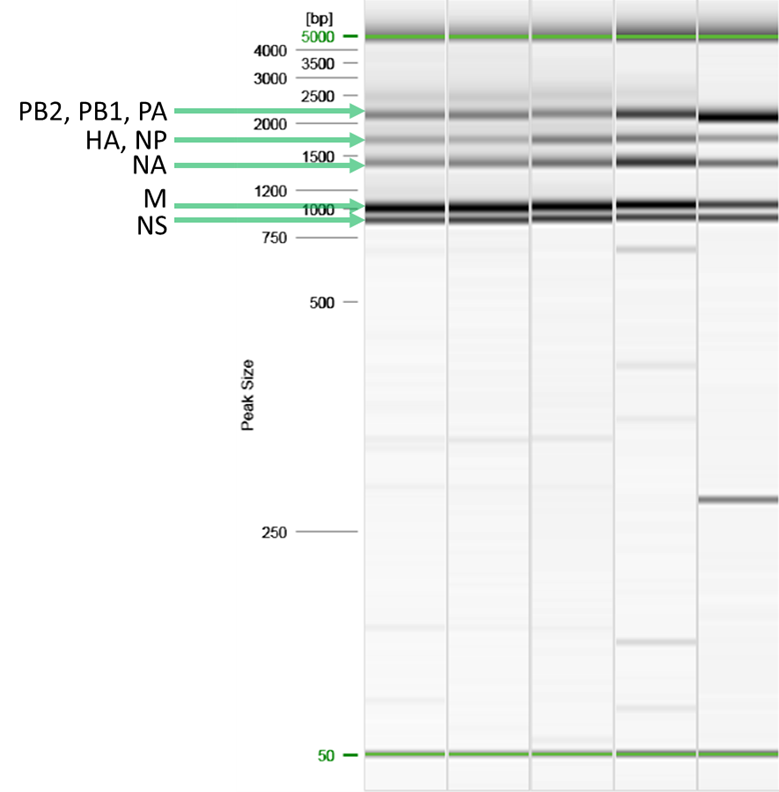

vignettes/influenza-rt-pcr.Rmd
influenza-rt-pcr.RmdNOTE: This procedure is provided for research use only. This document is not intended to be used for commercial development or for-profit testing. Use of trade names and commercial sources is for identification only and does not constitute endorsement by the Public Health Service or by the United States Department of Health and Human Services. Please do not distribute this document to other laboratories or commercial entities.
1.1 The purpose of this procedure is to describe a single-reaction
multi-segment amplification of influenza A viruses.
2.1 MRT-PCR: multi-segment reverse transcription polymerase chain
reaction
2.2 Room temperature: 15-25°C
3.1 Sterile, nuclease-free 1.5 mL micro-centrifuge tubes
3.2
0.2 mL PCR reaction tube strips or plates
3.2.1 PCR
8-tube strips (Brand Tech Scientific Inc. Catalog. No. 781332)
3.2.2 PCR Plate, 96-well, semi-skirted, flat deck (Life
Technologies, Catalog No. AB-1400)
3.2.3 TempPlate
pierceable sealing foil, sterile (USA Scientific: Catalog No. 2923-0110)
3.2.4 Sealing Roller (BIO-RAD: Catalog No. MSR-0001)
3.2.5 Silicone compression mat (Sigma Aldrich: Catalog
No. AXYCMFLAT)
3.3 Vortex
3.4 1.5 mL tube, 0.2 mL strip
tube, and 96 well plate compatible centrifuge
3.5 Cold blocks for
0.2 mL and 1.5 mL PCR reaction tubes (ISC BioExpress)
3.6
Pipettes (10 μL, 20 μL, 200 μL, and 1000 μL)
3.6.1
Multichannel pipettes also recommended (20 µL, and 200 µL)
3.6.2 Corresponding aerosol barrier pipette tips
3.7
Disposable reagent reservoir, sterile (Axygen: Catalog No. RES-V-25-S)
3.8 96-well format PCR Thermocycler System (BioRad: T100)
3.9 1.5 mL tube, 8-tube strip, or 96-well format magnetic separation
rack (Life Technologies DynaMag-2: Catalog No. 12321D, Alpaqua Magnum
FLX: Catalog No. A000400)
3.10 DNA electrophoresis and
visualization equipment (QIAxcel advanced: Catalog No. 9001941)
4.1 Nuclease-free water 4.2 SuperScript™ III One-Step RT-PCR
System (Invitrogen: Catalog. No. 12574026 – 100 reactions)
4.3
SPRI beads (Beckman Coulter: Catalog No. A63880, A63881, A63882, or
equivalent)
4.4 Molecular biology grade absolute ethanol
5.1 Universal primers for Influenza A listed in the Table 1 are
from Integrated DNA Technologies Inc. (IDT) http://www.idtdna.com (or
equivalent). Primers must be RNase Free HPLC purified.
5.1.1
Prepare 10 µM stocks of each MBTuni-12, MBTuni12.4, and MBTuni13.
5.1.2 Pool these 10 µM stocks in a 2:3:5 ratio respectively.
5.2 CDC provided primers are premixed at 1x strength and dried.
5.2.1 Reconstitute in 1 mL nuclease-free water.
6.1 Samples
6.1.1 Specimens collected from individuals
with a positive influenza A diagnostic test that have been inactivated
and extracted via filter or bead-based RNA extraction platform.
6.1.2 Propagated isolate derived from such clinical specimens
and similarly inactivated and extracted.
6.2 Controls
| Control | Material | Frequency | Expected Value |
|---|---|---|---|
| Positive |
Previously sequenced RNA from propagated isolate of currently
circulating influenza A virus, Ct <20 Or Previously sequenced RNA from clinical sample of currently circulating influenza A virus, Ct <20 Or Stock propagated isolates ordered from the International Reagent Resource |
Every run | Amplicons detectable by electrophoresis |
| Negative | Water | Every run | Amplicons not detectable by electrophoresis |
7.1 Adhere to the safety guidelines provided in the Biosafety in
Microbiological and Biomedical Laboratories and follow all established
site-specific safety procedures, including wearing proper personal
protective equipment (PPE).
8.1 Please send comments and questions by email to CDC Influenza
Division Technical Support: idseqsupport@cdc.gov
9.1 Thaw and store at the indicated temperature during the
procedure.
9.2 Flick/invert the reagent tubes to ensure they are
well mixed, and spin down before opening.
9.3 Keep enzymes at in a
freezer or on a cold block (approximately -20°C)
9.3.1
SuperScript III RT Mix
9.4 Keep in a refrigerator, cold block,
or ice bucket (approximately 4°C)
9.4.1 SSIII 2X Reaction
Mix
9.4.2 MBTuni Primer Pool
9.4.3 Samples and
Controls
9.5 Room temperature (15-25°C).
9.5.1
Nuclease-free water
9.5.2 SPRI beads (solid-phase
reversible immobilization beads)
9.5.2.1 Vortex
immediately before use
9.5.3 Freshly prepared 80%
ethanol
10.1 Combine the components of Table 3 to prepare a reaction master
mix sufficient for all samples and controls.
| Reagent | Volume (µL) Per Reaction | µL Per Master Mix |
|---|---|---|
| Nuclease-free Water | 8 | |
| 2X Reaction Mix | 12.5 | |
| SuperScript III RT Mix | 0.5 | |
| MBTuni Primer Pool | 1 | |
| Subtotal | 22 |
10.1.1 Aliquot 22 μL of each reaction mix into respective
wells of a 96-well PCR plate or into 0.2 mL PCR tubes.
10.1.2
For each sample, positive control, and negative control add 3 µL of
RNA or water.
10.2 Seal, gently mix, centrifuge, and incubate.
10.2.1
Securely seal to ensure no evaporation occurs.
| Step | Temperature (°C) | Time (mm:ss) |
|---|---|---|
| 1 | 42 | 50:00 |
| 2 | 50 | 10:00 |
| 3 | 94 | 2:00 |
| 4 | 94 | 0:30 |
| 5 | 43 | 0:30 |
| 6 | 68 | 3:50 |
| 7 | Repeat steps 4-6 for 4 total cycles | 8 | 94 | 0:30 |
| 9 | 57 | 3:50 |
| 10 | 68 | 3:30** |
| ** Extend this step by 10 seconds per cycle | ||
| 11 | Repeat steps 8-10 for 30 total cycles | 12 | 68 | 10:00 |
| 13 | 4 | hold |
11.1 QC amplicons via electrophoresis.
11.1.1 PB2: 2.3
kb
11.1.2 PB1: 2.3 kb
11.1.3 PA: 2.2 kb
11.1.4 HA: 1.8 kb
11.1.5 NP: 1.6 kb
11.1.6
NA: 1.4 kb
11.1.7 M: 1.0 kb
11.1.8 NS: 0.9
kb
11.2 Figure 1: Example 5-band pattern produced by the
MRT-PCR

12.1 Add 1x (50 µL) of SPRI beads to each sample, mix gently, and
incubate at room temperature for 5 minutes.
12.2 Spin down the
sample, pellet on a magnet for 2 minutes or until the supernatant is
clear.
12.2.1 Remove and discard the supernatant.
12.3
With the samples on the magnet and without disturbing the pellet:
12.3.1 Add 200 µL of 80% ethanol to each sample.
12.3.2 Immediately remove and discard the ethanol.
12.3.2.1 Do not allow the beads to dry to the point of
cracking.
12.3.2.2 Proceed immediately to the next step.
12.4 With the sample on the magnet and without disturbing the pellet:
12.4.1 Add 200 µL of 80% ethanol to each sample.
12.4.2
Immediately remove and discard the ethanol.
12.4.2.1 Do
not allow the beads to dry to the point of cracking.
12.4.2.2
Proceed immediately to the next step.
12.5 Spin down the
samples, pellet on a magnet for 10 seconds or until the beads collect to
one side.
12.5.1 Remove and discard any residual ethanol.
12.5.1.1 Do not allow the beads to dry to the point
of cracking.
12.5.1.2 Proceed immediately to the next
step.
12.6 Remove from the magnet, add 15 µL of water to each
sample, gently resuspend, and incubate at room temperature for 10
minutes.
12.7 Spin down the sample, pellet on a magnet for 2
minutes or until the supernatant is clear.
12.7.1 Remove and
retain the supernatant (cleaned amplicons) in a new plate.
13.1 The amplicons produced here are suitable for nanopore
sequencing as described in LP-512 – Native Library Preparation and
Nanopore Sequencing of Influenza A Virus and SARS-CoV-2 S-gene
Amplicons.
13.2 The user may decide to sequence the amplicons
produced here via other methods of library preparation and or other
sequencing platforms that are suitable for 0.9-2.3 kb amplicons;
however, it is the responsibility of that user to validate the chosen
sequencing method. It is not recommended to use sequencing data that is
of partial or low coverage or low quality.